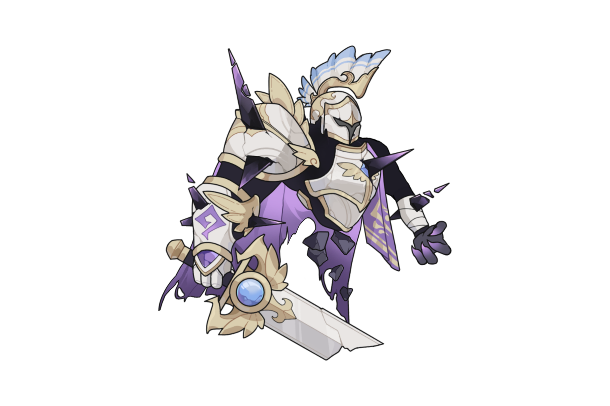
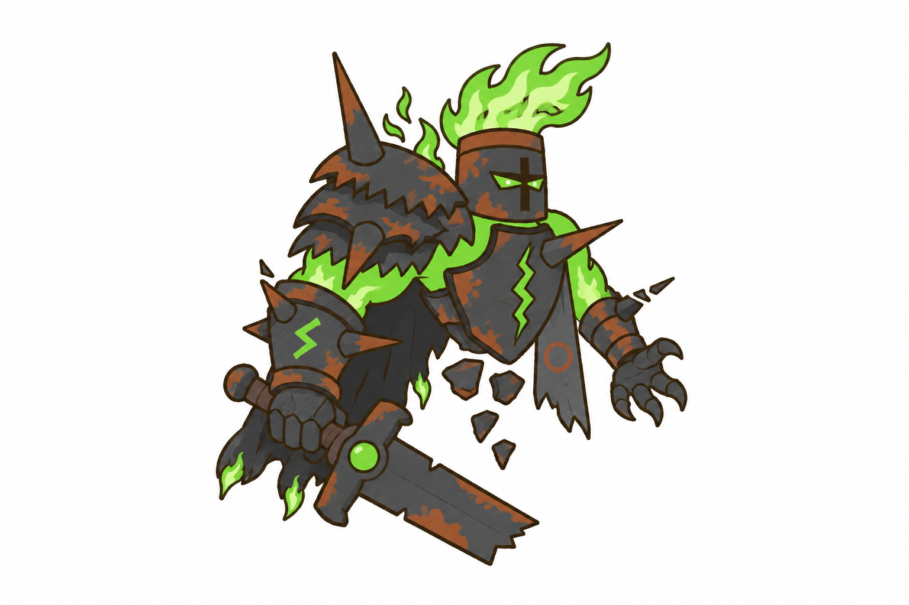
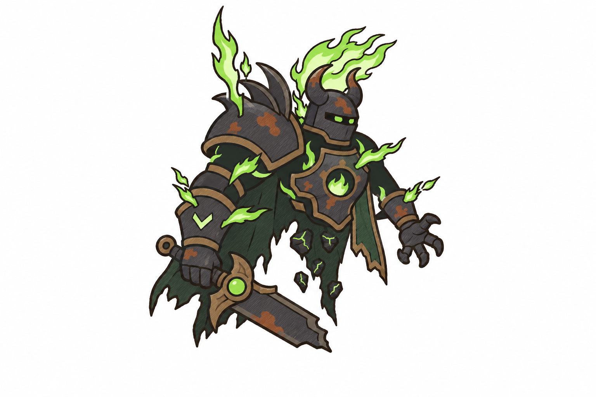

Kỵ sĩ cổ đại bị nguyền (tướng 8 đảo Kim) — concept lượt 1

Con gốc monster_3642 (khung 0 idle): chỉ để so dáng, chỗ, cỡ từng mảnh

A lửa linh hồn trong giáp: khoảng rỗng là lửa xanh, mũ thùng khe chữ thập, chùm lửa xanh thay lông vũ, gai sắt rỉ, giáp vai răng cưa, ngực nứt lộ lửa, áo choàng đen than mép lửa

B hồn ma bóng tối: khoảng rỗng đen xanh thẫm có lửa liếm mép, lưỡi lửa xanh phụt ra khe giáp, mũ hai sừng, bờm lửa ma, viền đồng xỉn, áo choàng xanh rêuC vua chiến trận cổ: rỉ nặng, viền vàng sờn, mũ vương miện gai, lửa bốc từ vương miện, mũi tên + giáo gãy cắm trên giáp, áo choàng đỏ rượu phai